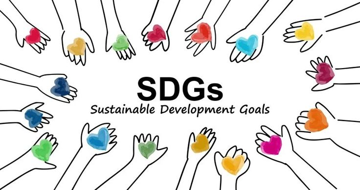
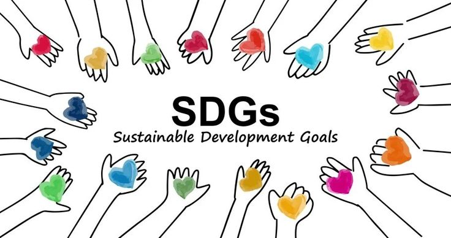

SDGs Pendidikan adalah bagian dari Sustainable Development Goals (SDGs), yaitu 17 tujuan global yang dirancang oleh Perserikatan Bangsa-Bangsa (PBB) untuk mencapai pembangunan yang berkelanjutan hingga tahun 2030. Fokus pendidikan terdapat pada Tujuan Ke-4, yang bertujuan untuk memastikan pendidikan yang inklusif, adil, dan berkualitas, serta membuka kesempatan belajar sepanjang hayat bagi semua orang. Tujuan ini menempatkan pendidikan sebagai elemen kunci dalam pembangunan manusia. Pendidikan tidak hanya berfungsi untuk meningkatkan keterampilan dan pengetahuan, tetapi juga menjadi dasar bagi terciptanya masyarakat yang lebih adil, inklusif, dan sejahtera. Pendidikan yang berkualitas memiliki peran penting dalam mengentaskan kemiskinan, mengurangi ketimpangan sosial, memperkuat kesetaraan gender, dan membangun masyarakat yang lebih berkelanjutan. Dalam konteks SDGs Pendidikan, terdapat beberapa aspek utama yang menjadi prioritas. Salah satunya adalah menjamin akses pendidikan yang inklusif dan berkualitas untuk semua individu tanpa memandang latar belakang sosial, ekonomi, gender, atau lokasi geografis. SDGs Pendidikan juga menargetkan penyelesaian pendidikan dasar dan menengah secara gratis dan berkualitas bagi semua anak, sehingga mereka memiliki keterampilan dasar seperti membaca, menulis, dan berhitung. Selain itu, penyediaan pendidikan anak usia dini yang berkualitas juga menjadi fokus penting untuk mempersiapkan anak secara fisik, emosional, dan intelektual sebelum memasuki pendidikan formal. Kesetaraan gender dalam pendidikan menjadi prioritas lainnya, dengan memastikan bahwa anak perempuan dan laki-laki memiliki akses yang setara di semua jenjang pendidikan.
Pendidikan adalah pondasi utama bagi pembangunan manusia dan kemajuan peradaban. Pendidikan yang berkualitas memberikan kesempatan kepada individu untuk mengembangkan potensi diri, meningkatkan keterampilan, dan memperluas wawasan yang diperlukan dalam menghadapi berbagai tantangan global. Dengan pendidikan yang baik, masyarakat tidak hanya dapat memperoleh pekerjaan yang layak, tetapi juga berkontribusi dalam menciptakan solusi terhadap masalah-masalah besar dunia, seperti kesenjangan ekonomi, perubahan iklim, dan urbanisasi yang semakin cepat.Salah satu alasan pentingnya pendidikan berkualitas adalah kemampuannya untuk mengurangi kesenjangan ekonomi. Melalui pendidikan, individu memperoleh keterampilan yang dibutuhkan untuk mendapatkan pekerjaan yang lebih baik, sehingga dapat meningkatkan taraf hidup mereka dan keluarga mereka. Pendidikan juga membantu menciptakan masyarakat yang lebih inklusif, di mana setiap orang memiliki peluang yang sama untuk mencapai kesuksesan, terlepas dari latar belakang sosial dan ekonominya. Dengan demikian, pendidikan menjadi alat yang efektif untuk memutus rantai kemiskinan antar-generasi.
Selain itu, pendidikan berkualitas juga memiliki peran besar dalam menghadapi perubahan iklim. Pendidikan membantu meningkatkan kesadaran masyarakat tentang pentingnya menjaga lingkungan dan mendukung pembangunan berkelanjutan. Dengan pengetahuan yang diperoleh melalui pendidikan, individu dapat memahami dampak dari aktivitas manusia terhadap bumi, serta berkontribusi dalam menciptakan solusi inovatif untuk mengurangi emisi karbon, mengelola sumber daya alam secara lebih bijak, dan melindungi keanekaragaman hayati. Pendidikan yang berbasis pada keberlanjutan juga mendorong terciptanya generasi yang lebih peduli terhadap masa depan planet ini.Urbanisasi yang semakin cepat juga menjadi tantangan besar yang membutuhkan solusi berbasis teknologi dan inovasi. Pendidikan yang berkualitas memberikan dasar yang kuat bagi masyarakat untuk memanfaatkan teknologi secara efektif dalam mengelola pertumbuhan kota, mengatasi masalah infrastruktur, dan meningkatkan efisiensi sistem transportasi, energi, serta layanan publik.
Dengan pendidikan yang relevan dan berbasis teknologi, individu dapat menjadi agen perubahan yang mampu menciptakan kota yang lebih layak huni dan berkelanjutan. Lebih jauh lagi, pendidikan berkualitas tidak hanya memberikan manfaat individu, tetapi juga memperkuat fondasi sebuah bangsa. Negara dengan sistem pendidikan yang baik cenderung memiliki tenaga kerja yang lebih produktif, inovatif, dan kompetitif di tingkat global. Hal ini berdampak pada pertumbuhan ekonomi yang lebih stabil dan pembangunan sosial yang lebih inklusif. Pendidikan juga mempromosikan nilai-nilai seperti toleransi, keberagaman, dan penghormatan terhadap hak asasi manusia, yang merupakan dasar bagi terciptanya masyarakat yang damai dan harmonis.Dengan kata lain, pendidikan berkualitas adalah investasi jangka panjang yang sangat penting untuk memastikan kemajuan individu, masyarakat, dan dunia secara keseluruhan. Tanpa pendidikan yang memadai, tantangan global seperti kesenjangan ekonomi, perubahan iklim, dan urbanisasi akan semakin sulit diatasi. Oleh karena itu, pendidikan yang inklusif, relevan, dan berkelanjutan harus menjadi prioritas utama dalam setiap upaya pembangunan, baik di tingkat lokal maupun internasional.
Oleh karena itu, pendidikan yang inklusif, relevan, dan berkelanjutan harus menjadi prioritas utama dalam setiap upaya pembangunan, baik di tingkat lokal maupun internasional.